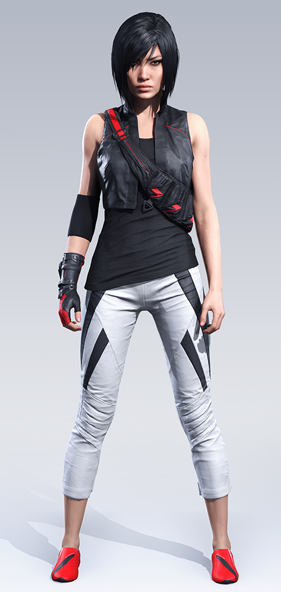

Faith Connors (Mirror's Edge 2008)
Electronic Arts
Comme nous l’avons vu jusque-là, dans les jeux vidéo, les personnages féminins et en particulier les héroïnes sont souvent des femmes blanches très sexuées et stéréotypées. Ce n'est pas le cas de Faith Connors, Mirror’s Edge, Electronic Arts, 2008 qui est eurasienne et qui ne cherche pas à jouer de son charme.
Faith incarne une rebelle luttant contre un régime répressif, constamment pourchassée, elle traverse la ville en pratiquant le « parkour » afin de livrer des messages confidentiels.
Elle est représentative, notamment parce que des joueurs se sont plaints à la sortie du jeu. En effet, sa création a suscité de nombreuses critiques car la poitrine du personnage a été jugée trop plate. Owen O’Brien le producteur explique : « Je voulais un personnage féminin fort, qui pourrait toucher aussi bien les femmes que les hommes. Une véritable héroïne humaine qui soit athlétique et attirante mais pas over-sexualisée. Quelqu’un qui devient un héros pas grâce à des super pouvoirs ou des armes high-tech, mais grâce à comment elle réagit face à la situation extrême face à laquelle elle se trouve. Quelqu’un qui soit iconique et inspirant sans être inatteignable. ».
A partir de ce moment, l’héroïne de jeu vidéo est de moins en moins sexualisée, stéréotypée et donne un regard nouveau sur la femme en société mais surtout des modèles sur lesquels s’identifier pleinement.